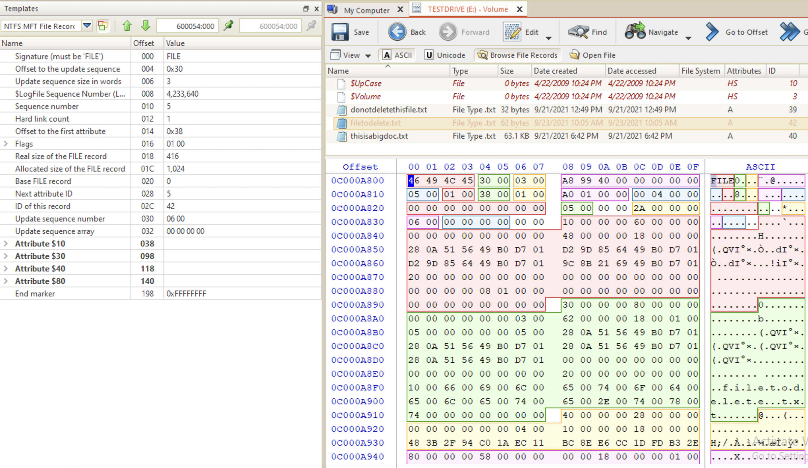
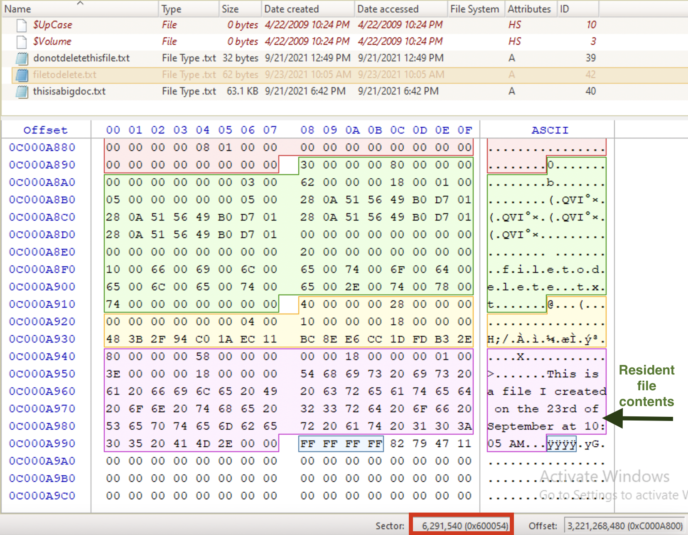

Steps
To get familiar with NTFS file creation and deletion, see here. In general, there are resident and non-resident files. Resident files are small and have their contents in the MFT record itself. Non-resident files are bigger and their contents is stored elsewhere on the disk.
⚠️ Since MFT records get reused once they are deallocated on the first-free basis, resident files get overwritten sooner.
For resident files, use a regular expression for finding FILE0 records: \x46\x49\x4C\x45.{18}[\x00\x02] [2]. This will find all the FILE records that are not newly created. Remember, once a file is created its sequence number is 01. Whenever the FILE record is deleted (deallocated, it’s never actually deleted), the sequence number gets incremented. So, if this record was deallocated once, its sequence number will be 0x02. But! This record can be reused multiple times! When I did the lab, one poor record was reused over and over again, and its sequence number got as big as 0x08, imagine that! So, I would fix the regular expression above to address these cases: \x46\x49\x4C\x45.{18}^[\x00\x01] (todo).
For a resident file:
- Use grep search or a regular expression (may use this feature in Active@Disk Editor) looking for the
FILEheader. As an alternative, use a keyword search. - Inspect each result and find the file needed and its contents.
❓ How to recover the file?
For a non-resident file:
- Use a keyword search, or carve using the file header. For example, if it’s a
docxdocument, look for50 4B 03 04 14 00 06 00. - Copy the raw data elsewhere. Open with the dedicated application.
❓ How to recover the file?
⚠️ When using a keyword search, use Unicode! Unicode is NTFS darling.
Example 1. Reconvering a resident file
Below is the file opened in Active@Disk Editor that I created and about to delete. In the first picture we can see the attributes and in the second - file contents. Also, in the second picture note the sector number (marked with a red rectangle). I am not using this data to recover the file, but I will rather use in validation purposes.


Now, I’m deleting the file.